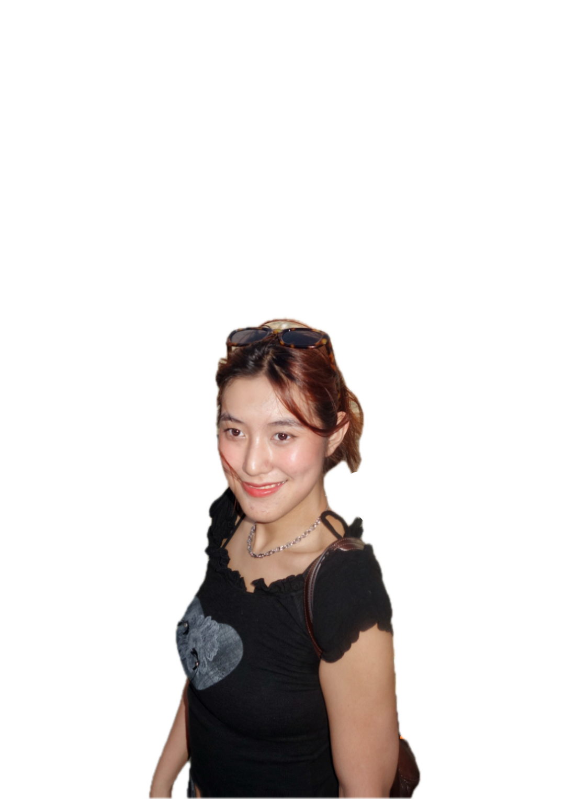

Portrait
welcome to the way
i see everything.
Photography
Out and About
Film
Oil Painting
Exhibition
welcome to the way
welcome to the way
i see everything.
重/解構 re(li)de(bra)structure(ry)

About
Hi, I'm Christine!
I'm a Psychology and AI double major, and I like recording things through different mediums — a camera, paint, whatever fits the moment.